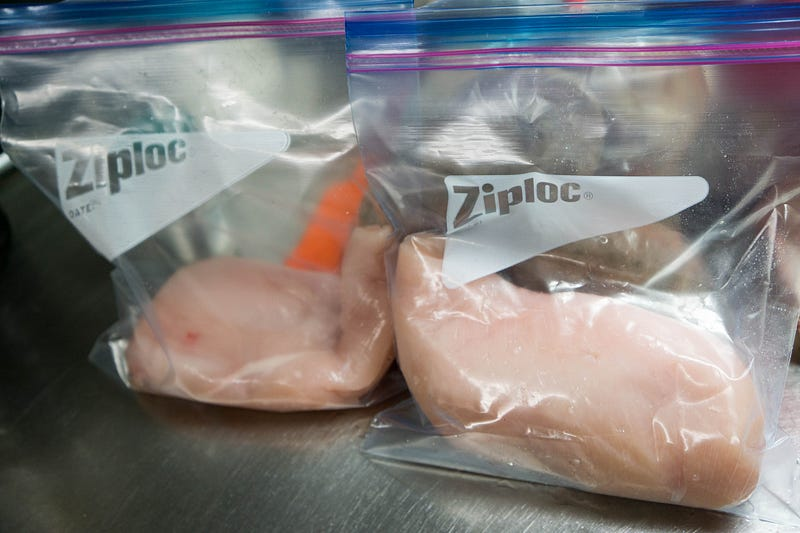
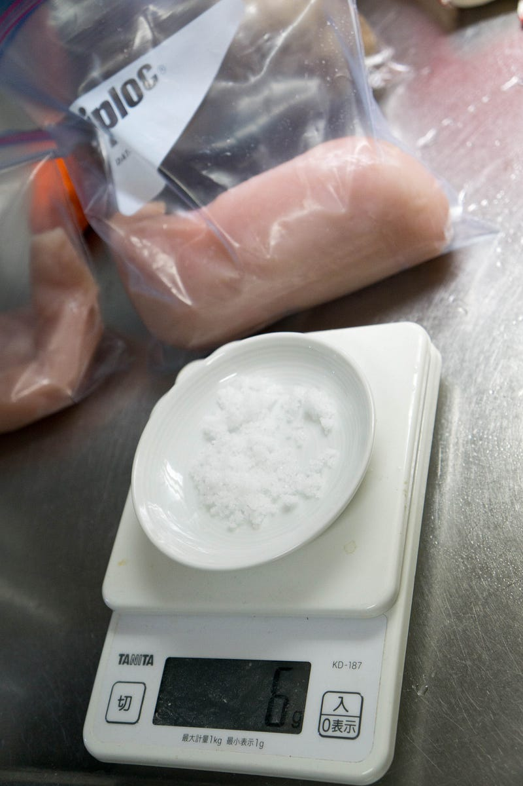
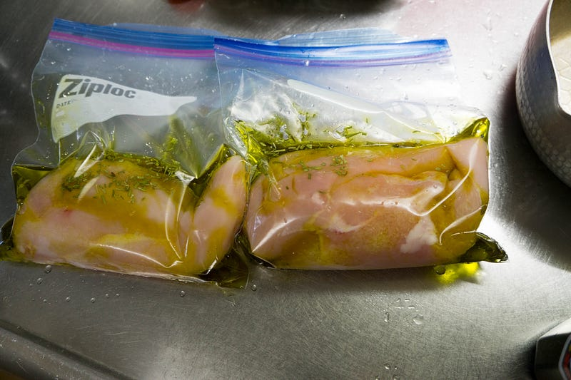
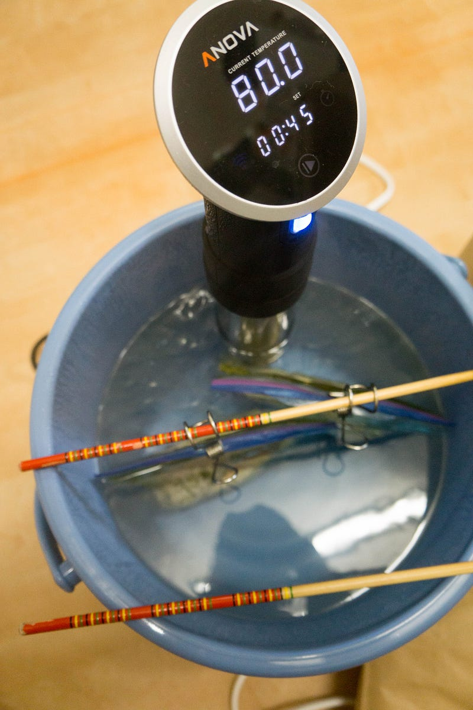
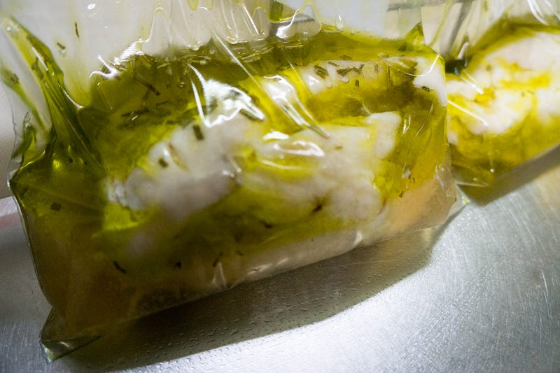
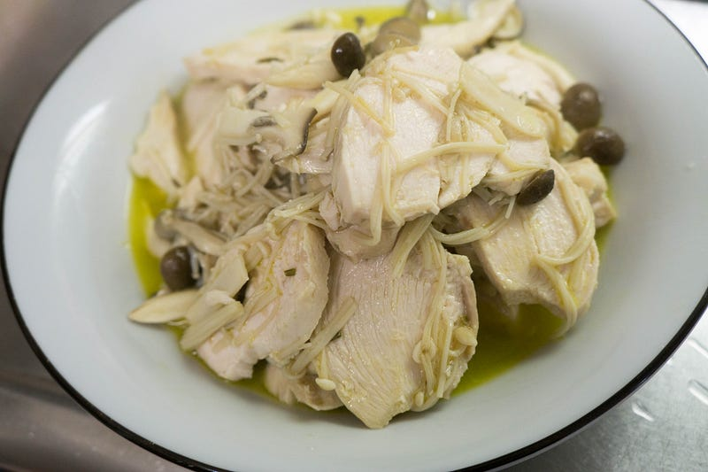

パンドラの箱を開けたので鶏胸肉のコンフィを作って見た
パンドラの箱を開けたので鶏胸肉のコンフィを作って見た
「え、鶏もも肉じゃなくて？」と言われそうだが、コンフィ自体は作った事何回もあるし、本当に作りたいのは秋刀魚のコンフィだし、いいんです。
Amazon | New: Anova Precision Cooker - WIFI 2nd Gen (900 Watts) | 卓上IHクッキングヒーターストア オンライン通販
New: Anova Precision Cooker - WIFI 2nd Gen (900 Watts)ほかホーム＆キッチン, 家電, キッチン家電, コンロ・クッキングヒーター, 卓上IHクッキングヒーターが勢ぞろい。ランキング、…amzn.to
New: Anova Precision Cooker - WIFI 2nd Gen (900 Watts)ほかホーム＆キッチン, 家電, キッチン家電, コンロ・クッキングヒーター, 卓上IHクッキングヒーターが勢ぞろい。ランキング、…amzn.to
パンドラの箱を開けたのでまずローストビーフを作った
前回の続き。念のため最初に言っておくと、一応、こう、エントリを書こうかとは思った物の、正直この低温調理というの、Anovaがスゴすぎてあまり書く事がない。medium.com
前回の続き。念のため最初に言っておくと、一応、こう、エントリを書こうかとは思った物の、正直この低温調理というの、Anovaがスゴすぎてあまり書く事がない。medium.com
まぁ前の記事にも書きましたけどね、レシピ的にはやることがあまりないのですよ。

鶏肉をジップロックにいれて…

重量の約2%の塩を準備して入れる（今回は300g強だったので6g）。ちなみに雑にやらない場合は、ちゃんと一旦塩をして、ちょっとねかしておいて水分を先に出すといいと思います。今回は雑なのでドンドンいれちゃいます。

油とローズマリーを入れてなるたけ空気を抜いて…

はい。80℃で1時間半。

できあがったらあら熱を取って冷蔵庫へ。

本日の夕飯はこれをキノコと炒めて食べました。
感想としては鶏ハムより全然楽ちんでうまいと思う！どうせ持ってるならanovaのほうが断然楽。次回は中華風にして前菜に食べたい。anovaは肉を柔らかくするとかが魅力として語られる事が多いけど、とにかく楽なんだな、という気づきを得られた。